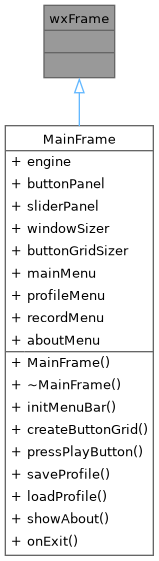
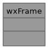

Virtual Sampler
0.0
A simple virtual sampler program.
Loading...
Searching...
No Matches
wxFrame Class Reference
Inheritance diagram for wxFrame:

Collaboration diagram for wxFrame:

The documentation for this class was generated from the following file:
/home/mark/Programming/LP_hazi/Virtual-Sampler/source/include/
base.hpp
wxFrame
Generated by
1.14.0
 1.14.0
1.14.0